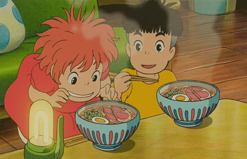

Ponyo - Ramen

There’s just something especially tantalizing about the ramen shown in Ponyo, with its thin slices of bright pink ham, tasty egg and scallions. Luckily, this Ponyo ramen is one super easy dish to recreate from home.
Ingredients:
- 1 package of Nissin Chicken Ramen
- 400ml boiling water
- 1 slice cooked ham (cut in half) (Use a thick slice if available)
- 1/2 hard boiled egg
- Chopped green onion
Steps:
- Boil the water
- Place the noodles in a ramen bowl. Pour boiling water over the noodles and cover. Set and start your timer for three minutes
- After the first minute, quickly open, shake the noodles to separate, then arrange the ham, egg, and green onion over the noodles. Cover again and wait until the timer beeps. (If you don't have a noodle bowl with a lid, you can cover the bowl with a place.
Return to homepage